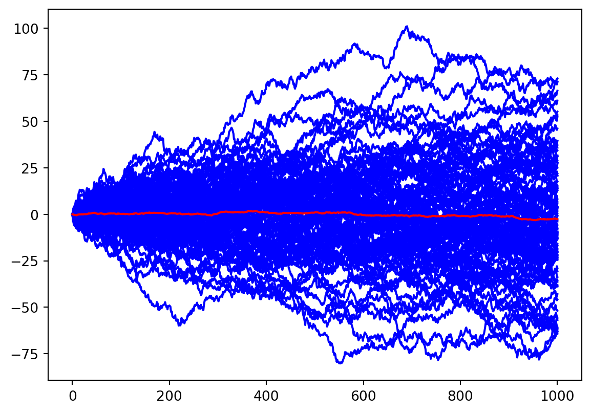
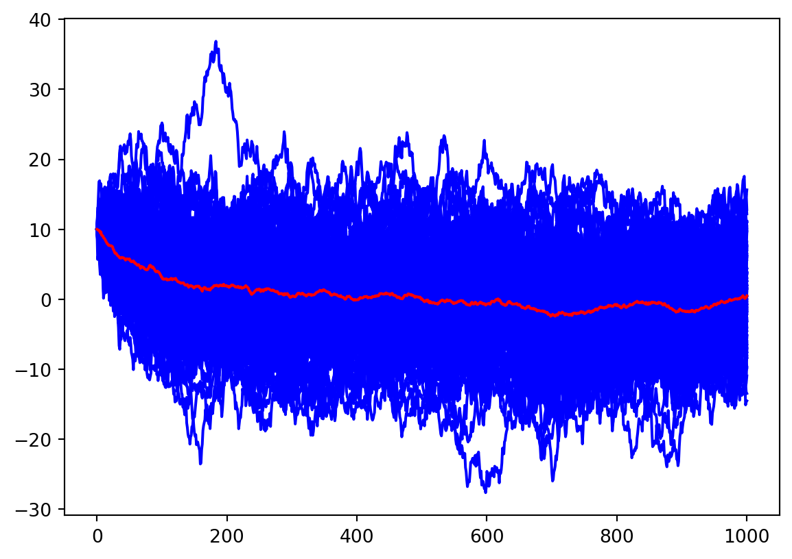

1 Presence or absence of stabilizing Earth system feedbacks on different time scales (DOI)
1.1 Useful definitions
Calcium carbonate (\mathrm{CaCO_{3}}) is essentially insoluble in sea surface waters today. Shells of dead calcareous plankton sinking to deeper waters are practically unaltered until reaching the lysocline, the point about 3.5 km deep past which the solubility increases dramatically with depth and pressure. By the time the CCD is reached all calcium carbonate has dissolved according to this equation: \mathrm{CaCO_{3} \, + \, CO_{2} \, + \, H_{2}O \rightleftharpoons Ca^{2+} \, (aq) + \, 2 \, HCO_{3}^{-} \, (aq)}
Carbonate compensation depth (CCD) is the depth in the oceans below which the rate of supply of calcite (calcium carbonate) lags behind the rate of solvation, such that no calcite is preserved
CCD
The exact value of the CCD depends on the solubility of calcium carbonate which is determined by temperature, pressure and the chemical composition of the water – in particular the amount of dissolved CO2 in the water. Calcium carbonate is more soluble at lower temperatures and at higher pressures. It is also more soluble if the concentration of dissolved CO2 is higher.
Weathering Feedback (\tau: 200 to 400 thousand yaer)
Rocks exposed at the surface interact with water and the atmosphere and undergo a set of chemical and physical changes we call weathering. The chemical part of weathering often involves the consumption of carbonic acid (formed from water and carbon dioxide) in dissolving minerals in rocks. This process of weathering is thus a sink for atmospheric carbon dioxide, which is an important greenhouse gas. If you remove carbon dioxide from the atmosphere, you weaken the greenhouse effect and this leads to cooling of the Earth. Like many chemical reactions, this chemical weathering occurs more rapidly in hotter climates, which are associated with higher levels of carbon dioxide. So consider a scenario in which some warming occurs; this will encourage faster weathering, which will consume carbon dioxide, which will lead to cooling. In this case, the initial change triggered a set of processes that countered the initial change — this is called a negative feedback (even though it may have beneficial results) because it works in opposition to the change that triggered it.
Marine calcium carbonate cycle
1.2 Simple models
Random walk: \frac{dT}{dt}=a\eta (t) => \Delta T_{rms} \alpha \Delta^{1/2}
Code
import numpy as npimport matplotlib.pyplot as plta=1dt=1Nt=1000Nens=100T0=0T=np.zeros((Nt+1,Nens))T[0,:]=T0for n inrange(Nens):for it inrange(Nt): T[it+1,n]=T[it,n]+a*np.random.randn()*np.sqrt(dt)plt.figure()plt.plot(T,'b')plt.plot(np.mean(T,axis=1),'r')

Ornstein-Uhlenbeck process \frac{dT}{dt}=- \frac{T}{\tau} + a\eta (t)
Code
import numpy as npimport matplotlib.pyplot as plta=1tau=100dt=1Nt=1000Nens=100T0=10T=np.zeros((Nt+1,Nens))T[0,:]=T0for n inrange(Nens):for it inrange(Nt): T[it+1,n]=T[it,n]-T[it,n]/tau*dt+a*np.random.randn()*np.sqrt(dt)plt.figure()plt.plot(T,'b')plt.plot(np.mean(T,axis=1),'r')

2 Abyssal ocean overturning slowdown and warming driven by Antarctic meltwater (DOI)
2.1 Definitions:
Antarctic Bottom Water (AABW): cold and fresh water at the bottom of the ocean originating near the Antarctic continental margin and sinking along the continental slope to the ocean bottom.
Circumpolar Deep Water (CDW): Intermediate water circulated around the continent. It is warmer and saltier that the surroundin water masses. It contributes to the melting of ice shelves.
Dense Shelf Water (DSW) refers to a type of water mass that forms in specific regions of the ocean, typically near continental shelves. It is characterized by its high density compared to the surrounding waters. DSW is formed through a combination of processes, including cooling and increased salinity.
Surface water-mass transformation (SWMT): Surface water-mass transformation refers to the process by which water masses in the surface layer of the ocean undergo transformation, leading to changes in their characteristics, such as temperature, salinity, and density. It involves a combination of physical processes, such as evaporation, precipitation, heat exchange with the atmosphere, and mixing with other water masses.
Antarctic surface water refers to the water mass that occupies the surface layer of the Southern Ocean surrounding the Antarctic continent. It is characterized by its unique properties, including low temperatures, high salinity, and a complex mixture of water masses from different sources.
Water masses in the Antarctic
2.2 Model and experimental design.
The model used for this study is the Australian Community Climate and Earth System Simulator Ocean Model version 2 (ACCESS-OM2) with the configuration at nominally 0.1° horizontal resolution (ACCESS-OM2-01). ACCESS-OM2 is a global ocean–sea-ice model driven by a prescribed atmosphere.
The model is firs spun-up for 200 years with a repeat-year forcing. From the spun-up state, three runs are perfomred with histircal and projhected climate change.:
A control run
A perturbed run with anomaleous wind, thermal and meltwater forcing.
A perturbed run with anomaleous wind and thermal forcing.
This allows the author to identify the contribution of meltwater forcing to the change in the AABW.
2.3 Results
Little change in the DSW for the period 2021-2030 (no change in the SWTM compare to the first part of the run). The impact is more clear for the period 2041-2050 (no more SWTM). Dur to that chang the abyssal ocean becomes warmer and less ventilated (increase in the age).
The wind and thermal forcing drives an overall freshening around Antarctica. Maybe due to an increase in the sea-ice melt.
The meltwater forcing initially drives an abyssal freshening followed by an increase in hte salinity.
Weakening of the global overturning circulation => Cooling in the abyssal atlantic ocean and warling in the abyssal Southern ocean.
Wind- and thermal forcing brings change in the upper ocean but not so much in the abyss.
CDW is displaced southward as wa can see in the increase in salinity over the upper continental slope. A warming is also present due to this displacement.
The ventilatin and overturning is decreased => increase in the abyssal age.
Changes in the temperature and salinity can be due to adiabatic movement of the isupycnal or changes in mass-properties due to mixing or buoyancy fluxes. With their analysis, they show that, in depth, it is the descent of the isopycnal.
Addition of the freshwater causes a freshening of DSW => less dense AABW => reduction of AABW => deepening of the isopycnal => The CDW moves southward.
The reduction of DSW combined with the mixing with older CDW increase the age along the slope.
3 Louvain finance day
3.1 Pathways towards net zero & sustainable investments (Philippe Wallez & Frédéric Degembe, ING)
How a bank can help to reach the net zero emission:
More activities and portfolio that help meet the global climate goals
Help the customers to acheave their own sustainability goals
Manage environmental and social risks
Support their employees in understanding and reducing their carbon footprint
In the CO2 emission report of a bank, a big part (99%) is coming from their clients.
Regulatory framework: for the first time, the bank is in demand of more regulation. The EU is develloping a taxonomy to identify which activity is sustainable or not. In the future, the banks will have to publish a report on their sustainable engagements. For each sector, they report the change in CO2. They don’t finance new oil and coal extraction plans.
THe finance principles don’t change, just the externalities. The banks are a transmission belt between the savings and the economy. Two dimensions: credit and investment. What is behind sustainability? What about biodiversity, land use, etc?
3.2 Climate stakes : learn from our past to create our future (Marie Cavitte)
3.3 The economic consequences of the energy transition (Hervé Jeanmart, IMCN)
Belgium is in deficit regarding the renewable energy. We have to import a lot of energy. The main difficulty is the transport of renewable energy. Efficency in energy is go for elictrifying. E-fuels: renewable energy turned into fuels and transport by pipelines. According to his model, we need no growth to avoid big bazar. To read: Julia Steinberger ## Because and Within (Jean Boissinot, Banque de France) Il faut demander au système politique de fixer les limites, ce n’est pas le rôle de la finance.
4 Beyond Turing: The response of patterned ecosystems to environmental change
4.1 Models
4.1.1 Klausmeier model extended
\begin{aligned}
&\frac{\partial w}{\partial t}=a-w-w n^2+v \frac{\partial w}{\partial x}+e \frac{\partial^2 w^\gamma}{\partial x^2}\\
&\frac{\partial n}{\partial t}=w n^2-m n+\frac{\partial^2 n}{\partial x^2}
\end{aligned}
+ Periodic boundary conditions to diminish boundary effects and to mimic an infinite domainµ + multiplicative uniformly distributed noise every 1/4 year to diminish numerical artifacts, such as system residing in unstable system states.
They performed a linear analysis.
Model runs show that when randomly perturbing uniform states that are Turing unstable, the system tends to evolve to a state with a pattern wavenumber close to the wavenumber of the perturbation with the largest growth rate, also referred to as most unstable mode
4.1.1.1 Existence and stability of patterned system states
Patterns may exist in th e form of wavetrains: vegetation bands that are migrating uphill. To deal with that, they use a comoving frame (change of varaible) \xi = x -st were s is the migration speed. By putting this into the equations. A pattern ($w_{p},n_{p} $) with wavenumber \kappaexists for a rainfall a if is a solution to the system
\begin{aligned}
& 0=a-w_p-w_p n_p^2+(v+s) \frac{d w_p}{d \xi}+e \frac{d^2 w_p^\gamma}{d \xi^2}\\
& 0=w_p n_p^2-m n_p+s \frac{d n_p}{d \xi}+\frac{d^2 n_p}{d \xi^2}
\end{aligned}
To assess the stability => perturbation theory
Thanks to Floquet theory, you can assess the stability of solutions depending on their (\kappa, a) by looking at the eigenvalues of the perturbations who are complex and depend on \nu.
Stable patterns exist in what is referred to as the Busse balloon: the region in (a,\kappa)-space for which at least one stable periodic solution exists.
Stability regions are bordered by marginally stable solutions. Therefore a Busse balloon can be constructed by finding marginnally stable solution => Same idea as for the linear analysis but aply on patterns.
How the eigenvalues obtain the positive real parts?:
period doubling instability
sideband instability or Eckhaus instability. This instability is characterized by a chang in the sign of the curvature around \nu=0.
4.1.1.2 Ecological implications
Turing zone and the Busse balloon only partly overlap
Patterns outside the Turing zone
Multistability
A pattern is stable for a range of rainfall a
High wavenumbers are stable for high values of a
The boundary of the Busse ballon is steeper for low rainfall => sudden desertification for decreasing raifall
4.1.1.3 System response to changing environmental conditions
the linearization we implicitly apply only enables us to describe the behavior of the system close to the steady state. Consequently, if the system is pushed away from a steady state (during pattern destabilization) it is a priori unknown to which state it will evolve (restabilization).
The model is run with two changing rainfalls $ da/dt= ^{-4}$ => 0.1 mm \, year^{1} (much slower compare to what I did).
For the decreasing rainfall:
The transition to a lower wavenumber happens when the boundary of the Busse balloon is reached. During that time, only a change in the amplitude of the patterns.
The adapatation of the wavenumberrs is linked to the extiction of vegetation patches.
Sudden desertification when there are no more stable patterns => All the patches go extinct simultaneously.
For the increasing rainfall:
Homogeneous solution destabilize at the lower border of tje Busse balloon.
Patches split when wavenumber increases
For the slope terrain, the hysterisis is more pronounce
4.1.1.4 Wavenumber selection: the role of rate of change and noise
At high rate of change, desrtification can take place at reainfall levels for which stable patterned still exist.
At sufficiently high noise levels, patches go extinct one-by-one and the system tends to closely follow the boundary of the Busse balloon.
For some wavenumber adaptations period doubling occurs => Half the patches disappear.
It depends if this adaptation happens close to the boundary or not
Close to the boundary of the Busse balloon, no period doubling.
4.1.1.5 Competition between and rearrangement of patches
The disapperance of one patch results in growth of the neighboring patches => Those buffed patches affect their neighbor and so kill half of the patches.
If there is no doubling, there is a spatial rearregment of the patches.
The fact that you have a reaaregment or a perdio doubling depends if the change is due to a perdio doubling instability or a sideband. For high rates and low noise, you have perdio doubling (half the patch disappear => big juump accross the wavenumber). For low rate of change but high amplitude noise, you have a sideband instability => reaaregment.
Ansatz: travelling waves u(x,t)=\tilde{u}(z) and u(w,t)=\tilde{w}(z) where z=x-ct. By substitution,
\begin{aligned}
&\frac{d^2 \tilde{u}}{d z^2}+\frac{c d \tilde{u}}{d z}+\tilde{w} \tilde{u}^2-B \tilde{u}=0\\
&\frac{(v+c) d \tilde{w}}{d z}+A-\tilde{w}-\tilde{w} \tilde{u}^2=0
\end{aligned}
Patterns solutions correspond to limit cycles of the ODEs.
He compute the Busse balloon with c (migration speed) and A (envirronment).
5.2 Hysterisis
L=150 and $ A [ 0.5,3.2 ] $ The simulation starts with A=3.2 and is decreased by 0.1 every 2400 time units. When A=0.5, he incresed A back to 3.2 with the same rate. => Hysterisis
Funny point: the system spents time in a zone where the patterns should be unstable.
Two hypothesis:
The size of the domain restricts the possible modes => Increase the region of parameters where the system is stable.
He did tests and that’s not the case.
The time interval between tow increase/decrease of A: this as an effect. When the decrease is rapid, you can stay on the branch for lower values of A (you go deeper into the instability zone.)
6 Regime shifts in models of dryland vegetation
Review of diverse vegetation models.
\begin{aligned}
\partial_t b & =\frac{w}{w+1} b-\mu b+\nabla^2 b, \\
\partial_t w & =\frac{w}{w+1} h-v w-\gamma \frac{w}{w+1} b+D_w \nabla^2 w \\
\partial_t h & =p-\frac{w}{w+1} h+D_h \nabla^2 h, \\
\end{aligned}
Comparaison with the dimensionnal model that I used.
Variables:
\begin{aligned}
b & =\tilde{B}/k_{2}\\
w & =\tilde{W}/k_{1}\\
h & =\tilde{O}/k_{1}\\
\end{aligned}
Space and time
\begin{aligned}
t & =\tilde{t}/t_0\\
x & =\tilde{x}/x_0\\
t_0 & =1/cg_{max}\\
x_0 & =\sqrt{\tilde{D_{B}}t_0}\\
\end{aligned}
Diffusion coefficients:
\begin{aligned}
D_{w} & =\tilde{D_{W}}t_0/x_{0}^{2}=\tilde{D_{W}}/\tilde{D_{B}}\\
D_{h} & =\tilde{D_{O}}t_0/x_{0}^{2}=\tilde{D_{O}}/\tilde{D_{B}}\\
\end{aligned}
Parameters:
\begin{aligned}
\mu & =dt_{0}\\
\alpha & =\tilde{\alpha}t_{0}\\
f & =W_{0}\\
\gamma & =k_{2}/(k_{1}c)\\
\nu & =r_{W}t_{0}\\
p & =Rt_{0}/k_{1}\\
\end{aligned}
7 Origin, importance, and predictive limits of internal climate variability (DOI)
7.1 What is internal variability?
Internal variability occurs around a mean state, which is dictated by the long-term balance of the system.
The atmosphere is accountable for a big part of the internal variability.
Q?: What is a climate attractor and are they multiple?
Earth’s thermostat can be seen as an attractor mechanism (feedbacks): warming -> rock weathering -> carbon burying -> cooling
7.2 Why cara about internal variability
Superposition of external and internal influences complicates the interpretation of the historical climate record as our understanding of climate variability and change relies on a robust separation of these influence.
It calls for probabilistic prediction
It can lead to extreme events
7.3 The role of internal variability in climate projections
7.3.1 Temperatures projection
Ensemble of 30 runs with CESM1-LE with similar initial conditions.
All members show a increase in temperature but the spatial pattern differs between runs.
The signal/noise ratio is larger than one everywher which indicates the emergence of a forced response to external driver.
7.3.2 Contributioon of internal variability to total projection uncertainty
Total projection uncertainty: decompose the total uncertainty in three contributions:
scenario uncertainty
model response uncertainty
Internal variability
How to compute those contribution
Forced response: For each model and scenario by averaging all simulations or statistical fit with a 4th-order polynomial.
Internal variability: Variance of the residual from the forced response.
Response uncertainty: Variance accros the estimated response in each model for a given scenario. (An estimated response for one run is given by the statistical fit)
Scenario uncertainty: averaging all the response for a given scenario and then evaluate the variance across the scenarios.
The uncertainties are approximately additive.
7.4 Decomposistion of drivers
8 Early-warning signals for critical tranitions (DOI)
8.1 Critical slowingdown
At fold bifurcation points, the dominant eigenvalue characterizing the rates of change around the equilibrium becomes zero. This implies that the system becomes increasingly slow in recovering from small perturbations.
The internal slowing down leads to an increase in the autocorrelation.
The simplest approach is to look at lag-1 autocorrelation.
Increased variance is another possible consequence of critical slowing down. Intuitively, the impacts of shock doe not decay, and their accumulating effects increase the variance of the state variable
In principle, critical slowing down could reduce the ability of the system to track the fluctuations, and therby produce an opposite effect on the variance!!
8.2 Skewness and flickering before transitions
The asymetry of fluctiations may increase before a catastrophic bifuracation.
Close to the bifurcation point, the unstable equilibrium approaches the attractor from one side. In the vicinity of this unstable point, rate of changes are lower and so the system spends more time in that part of the phase space. This increases the skewness if the distribution.
An other effect of the vicinity of the boundary of the basin of attraction is the flickering of the system between the two stable states.
8.3 Examples in real systems
Flickering preceded the abrupt end of the Younger Fryas cold period.
Increased Pleistocene climate variability before the transition from a greenhouse to ice house earth.
8.4 Outlook
False negatives
Sudden shift in the system without a gradual approach to a treshold. (N-tipping)
Fast and permanent change of external conditions cannot be detected.
Statistical difficulty
Change is the external forcings
False positives
Sensitive the filtering techniques
Due to a confounding trend within the system or in the external regime of perturbations
Perturbations will often trigger a transition well before a bifurcation point is reached. Thus, although a trend in the indicators may serve as a warning, the actual moment of a transition remains difficult to predict.
A key issue when it comes to practical application is the question of whether a signal can be detected suffi- ciently early for action to be taken to prevent a transition or to prepare for one.
9 Turning back from the brink: Detecting an impending regime shift in time to avert it (DOI)
9.1 Fisheries food web model
For short time scale
\begin{gathered}
\frac{d A}{d t}=-q E A \\
\frac{d F}{d t}=D_F\left(F_R-F\right)-c_{F A} F A+\sigma \frac{d W}{d t} \\
\frac{d J}{d t}=-c_{J A} J A-\frac{c_{J F} v F J}{h+v+c_{J F} F}
\end{gathered}
with A adult piscivores, F adult planktivores and J juvenile piscivores.
Remarks:
The consumption of J by F is given by -\frac{c_{J F} v F J}{h+v+c_{J F} F}. It is reduced by an increase in h (refuge habitat of juvenile piscivores)
where s is the survivorship between maturation intervals and f is the fecundity rate of A.
9.2 Management scenario and effects
Two management scenario were defined
MS1 Immediate reduction in harvest to qE=0.1
MS2 gradual restoration of shorline habitat.
A regime shift is defined as the period over which the annual increase in the plaktivore population exceeded 10 %.
Sensitivity analyses show that the attainable proximity to a regime shift is reduced if the management response is weaker or if the system is subject to greater levels of stochastic variation, but is unaffected by the rate of change in the variable driving the regime shift
Where pressure on the ecosystem can be immediately reduced (angling), a shift can be averted by taking action even once a regime shift is underway, whereas, if pressure can only be gradually reduced (restoration of shoreline habitat), action needs to be taken substantially in advance of a shift.
There is a clear end after which management action to advert transition is impossible. (depending on the amplitude of change?)
There is a considarable lag between the time at which one equilibrium does not longer exist and the point at which the regime shift occurs. This allows overshoot error. (Rithcie’s vibe!)
9.3 Early Warnings Signals
For MS1, the warnings in std appear 3-10 years before the end of the policy window (point in time after which we are doomed!)
For MS2, the warnings do not appear before the the end of the policy window.
This depends on the definition of the “large annual increase” in the indicator.
No clear signals for kurosis or skewness.
Gradual change in the indicators does not indicate wheter management action is needed.
They propose to look at the ratio between high and low frequency in the spectrum. The disappearance of the attractor is signaled by reddning of the noise (low frequency starts to dominate).
9.4 Discussion
In practice, regime shifts often involve multiple driving vari- ables. Where some of these variables can be manipulated quickly and others only more gradually, it may be possible to ‘‘buy time’’ to ameliorate a slow variable by implementing changes in a variable that can be rapidly manipulated. For instance, if the policy window for preventing a shoreline-induced regime shift through habitat restoration has closed, it may still be possible to avert a shift by reducing angling pressure. This effectively provides additional time to rehabilitate shoreline habitat. Identifying fast management variables that can act as ‘‘emergency levers’’ to extend our opportunity for addressing slow management variables may be critical to avoiding regime shifts.
Varance and AR1 can be problematic as early warnings in two ways.
The changes are small. Difficult to detect
It gives no indication of how close to the regime shift we are. It is needed to define of specific values indicators that should trigger management action.
The indication should appears ideally when the first stable attractor disappear. Spectral density ratio could be a solution.
10 Resilience, Adaptability and Transormability in Social-ecological Systems
Resilience needs to be considered in terms of the attributes:
Three attributes: resilience, adaptability and transformability
Adaptative cycle: Four phases
Growth and exploitation phase (r): accumulation of resources, predictability
Conservation phase (K): System begins to be locked and less flexible
Collapse and release phase (\Omega):
Reorganization phase (\alpha)
Resilience is the capacity of a system to absorb disturbance and reorganize while undergoing change so as to still retain essentially the same function, structure, identity, and feedbacks. Four aspects of resilience:
Latitude
Resistance: difficulty to change the system
Precariousness: How close to a treshold
Panarchy: Cross-scale interactions
Adapability: Adaptability is the capacity of actors in a system to influence resilience. (Vegetation patterns is an example) For Social-ecological Systems (SES), the adaptability is a mainly a function of social component. Four paths of actions:
Move treshold away (change in precariousness)
Move the system away from the treshold (change in latitude)
Make the treshold easier of more difficult to reach. (change in resistance)
Manage cross-scale interaction
Transformability: The capacity to create a fundamentally new system when ecological, economic, or social (including political) conditions make the existing system untenable.
Distinction between evolved system (life) and recently developed one (SES): the former’s history allows it to play with fire (high precariousness and high resistance). For the SESs, the absence of co-evolutionary histories creates a lack of appropiate feedbacks.
11 Machine learning in climate (Maike Sonnewald)
Two types of ML:
supervised and reinforcement learning (desinged by humans)
unsupervised learning
She will talk about unsupervised learning
Different methods existe to find patterns. Depending on the data distribution, some of them work better than other.
K-means is a very simple method.
Akaike information criterion.
Be careful of over fitting.
Patterns that seem to be ok can be totally misleading.
To assess if your model is good, you have to use information criteria. Am I gaining information by adding more complexity (for the K-means, it can mean adding new cluster or adding variable)
Other method: DBSCAN. Association by closer neigbour.
Supervised learning: Minimization of a quantity.
Neural network
Random forests
Support vector machine
…
Scaling is important. Example income VS age.
12 Oceanographic applications for machine learning: southern ocean case study
Link between the amount of data vailable and the non linearity?
Uncertainties and errors in parameters
Southern ocean is a good case to minimize the range of uncertainty in the parameter, but we don’t have a lot of data.
12.1 Find patterns in complex data
Identify dominant equation terms (regime) in different parts of the ocean.
Change framework by looking at barotropic vorticity
The learning is somehow supervised because from the 50 clusters initially computed, they form 6 regimes based on their expertise.
In southern ocean, we have gyres (subpolar gyres). The difference with gyre in the Northen ocean is that there is no continent.
They look at the wind stress and the non linear dissipation terms and look at their contribution to the differents regimes. It appears that the non linear regime is the one that explain the subpolar gyre.
When the current reachs topography dissipation appears due to non-linearities. Gyre forms after this dissipation. Pre conditionning of the flow
12.2 Inferring subsurface circulation for climate process understanding
L’idée de base est de comprendre comment le frocage en CO2 influence l’overturning circulation. MAis j’ai pas compris comment on fait… C’est fait en identifiant les changements dans les régimes océaniques à l’aide de réseaux de neurones.
12.3 Transparant and safe machine learning
Une méthode pour vérifier que le réseau fonctionne bien est de regarder comment il a obtenu un résultat. C’est à dire vérifier quelles données il a employé et si ces données sont en effet physiquement pertinentes.
On peut aussi avoir une approche baysienne. Dans ce cas les poids sont liés à des distributions de probabilités et on peut faire du Monte-Carlo pour juger de la confiance que l’on peut avoir dans le réseau.
13 Towards Neural Earth System Modelling by integrating Artificial Intelligence in Earth System Science
13.1 Overview on Earth System Modelling and Earth System Observations
We have primitive equations for some parts of the climate system but not for all and we have subgrid processes. This implies free parameters that need to be found empirically.
Problems with the ESMs:
Big range of the equilibrium climate sensitivity
No tippping points
Missing important processes like carbon cycle, water and nutrient availability or land use climate interactions => Important for mitigation (CDR, …)
No extreme events
Earth system observations are used to evaluate and compare processed-base model performance, to set the bouindary forcings, …
ESOs are also used to influence models output (Data assimilation)
Main problems od ESM data assimilation:
Nonlinear dynamics and non-Gaussian error budgets + high dimensionality
constraining the governing processes over the different spatio-temporal scales in couple
There are gaps in the observations
13.2 From Machine Learning-based Data Exploration Towards Learning Physics
First application of ML to climate in the 1990s
Different types of application:
data-driven weather prediction
accelerate computationally demanding components of forecasting (clouds, …)
filling the holes in a database
extract patterns from data. Better than PCE because non linear.
compute faster and enhance the subgrid processes by training the ML techniques on higher resolution models.
13.3 The Fusion of Process-based Models and Artificial Intelligence
Distinction between weakly coupled NESYM hybrids and strongly coupled NESYM hybrids.
Example of weakly coupled:
Neural networks used to emulate subprocesses for ESMs. Problem: stability issues
Neural networks are trained with model state variables and can be used to emulte the ESMs but also inverting geophysical processes, causation, …
Previous uses work with prediction scenarios within the training data distribution => the non-stationnarity of climate is a problem.
Strongly coupled NESYM may be the solution because the ML component can adapt to new information given by the ESM for example.
13.4 Peering into the black box
Interpretable AI (IAI)
explainalbe AI (XAI)
14 Rate-induced tipping in ecosystems and climate: the role of unstable states, basin boundaries and transient dynamics (DOI)
14.1 Introduction
Characteristics of a complex system
Interactions between componenents are nonlinear
Complex and partly unpredicatble dynamics or the system can create spontaneously temporal or spatio temporal patterns.
Random fluctuations
Two properties of the climate system that needs an extension of the clasisscal bifurcation theory -> critical transistions
Multi-scale processes in space and time
Many critical transitions are observed in time-dependent environment
14.2 Multistability as a prerequisite for tipping phenomena